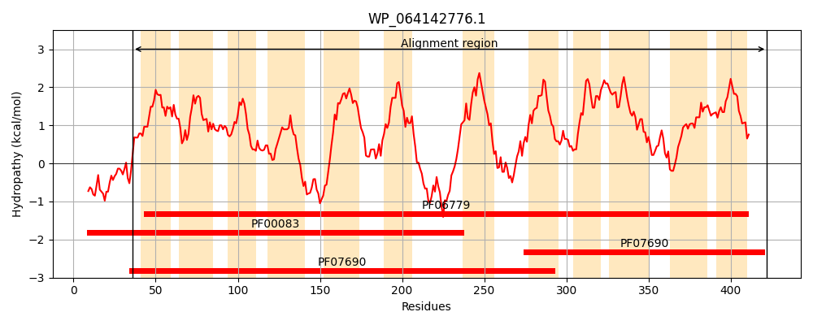
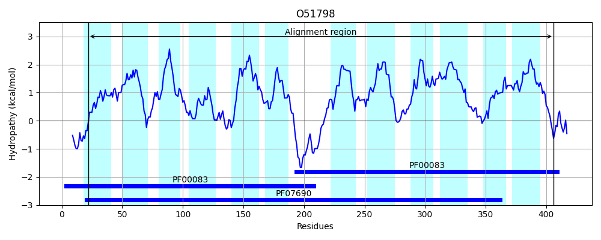
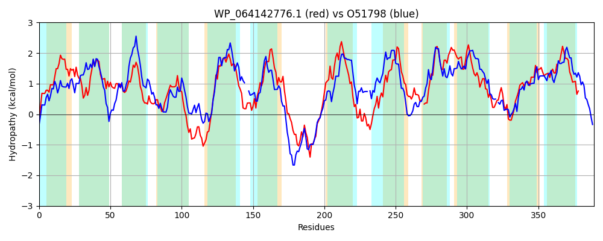

Hit Accession: O51798
Hit TCID: 2.A.1.15.9
Hit Description: gnl|BL_ORD_ID|7297 gnl|TC-DB|O51798|2.A.1.15.9 Probable 4-methylmuconolactone transporter - Ralstonia eutropha (strain JMP134) (Alcaligenes eutrophus).
Mach Len: 389
e:0.000000
Query TMS Count : 12
Hit TMS Count: 12
TMS-Overlap Score: 11.300000
Predicted Substrates:CHEBI:1799;4-carboxymethyl-4-methylbut-2-en-1,4-olide, CHEBI:16766;4-carboxymethyl-4-methylbut-2-en-1,4-olide
BLAST Alignment:
Score: 426 , Bit scores: 168 bits, E-value: 7.7e-48, Alignment length: 389, Percentage identity: 28
Query: 36 GWTFESYDSFLLSLLLPVLGVVFGINKTELGLFISVTAGGQIIGGILFGFIADKIGRVKTALTCIAIYSLFSGLLAFTHDQQHFALLRFCGALGMGGMWTSGAALIAETWRPERRARGGALMQMGLPVGAILAISLTAIVSSVNGGLEQGAWRYLFMIGALPVFIMSVVAWFTPESQVWLARQQAKATSSQPAAKLGKHNLKGLLLAFVFIFFIQYLFWGVFTWTPTYLREVKHLDFLHSLKFVFALQAGAIAGFLVFSVLADKWGRRP-MFLIYLLTGAIAVALYLVTTQPIILMVAIFMAGFGVNGIFAGSGPFLAEIIGDTSSRGFLMGLAYNGGRLGGFIAPLLIGAVANAGGFTAGLAT-TVVAFLAAMLVVWRAPETRGIKLK 422
GW +S+D + S LLP L + +G+ K E+G+ +V IGG G ++D+ GR + + I ++LF L F Q + R LG GG W GAAL+AE R + +Q G +G LA+ + ++ + ++ AWR F G +P I+ + +S ++ +Q++A + ++ + + L L+ V + +Q + + W P+ L + + + + VF + G+ GF V + L+D+ GRRP + L+ + + V+ L+ + + F+ GF G+FA GPFL+E+ T+ R MG AYN G+ G + + +G ++ G + T +VA+ A+ + PETRGI ++
Sbjct: 22 GWALDSFDMQMFSFLLPALTLTWGLTKAEVGVLGTVALVVTAIGGWGAGILSDRYGRARILVLAIIWFTLFGVLAGFAQSYQQLLIARTLQGLGFGGEWAVGAALMAEVIDSRHRGKAIGFVQSGFALGWALAVVVATLLLAWLP--KEMAWRVAFWSGIIPALIVLFIRRHVKDSSMFERARQSRAPRASLSSVFNRKYARTLALSSVLVIGLQAGCYAILVWLPSLLNQ-RQVAAGSMIVTVFIMAFGSFCGFAVTADLSDRIGRRPTLILLSVCAWIVTVSYMLLPLNTTLTAILGFLVGFSAIGMFAALGPFLSELF-PTNVRTTCMGFAYNVGKSIGAGSVVGVGVLSTHIGLANAMGTFCLVAYAFAVFGIMLLPETRGIAIE 406 | Protein Hydropathy Plots: |
|---|
|  |  |
Pairwise Alignment-Hydropathy Plot:
|
|---|
|  |